风险预控系统可视化使用说明书
1 系统登录。
概述：本系统设置了用户和密码，只有登录了系统，才能操作系统中的功能。
操作：用户需要输入正确的用户名和密码才能登录系统。登录界面（图1-1-1）。登录成功界面，（图1-1-2）。
图1-1-1
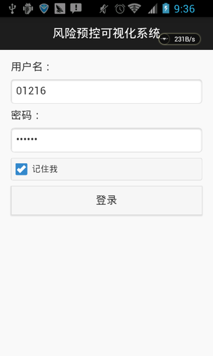
图1-1-2
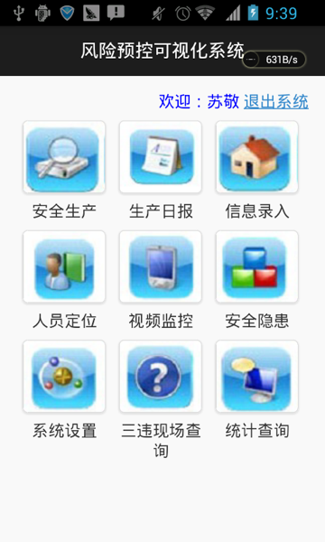
2 信息录入。
概述：包括隐患录入、三违录入和录入信息查询（最近20条）。
操作：
隐患录入：主要用来录入入井排查的隐患。排查类型主要为日常动态排查。此处隐患排查和人员定位以及考勤系统联系起来。录入隐患信息，需要录入项包括隐患依据，隐患级别，隐患类型，隐患描述，责任单位，责任人，排查地点，明细地点，排查时间，排查地点，排查班次，排查人员，排查类型整改方式等信息。隐患依据是根据过滤条件从隐患标准库中检索得到。隐患描述可根据隐患详细内容手动录入。录入时带*号内容必须录入，不可为空（图2-1-1）。录入信息时，点“获取隐患依据”，跳转至“过滤隐患依据”页面（图2-1-2），根据隐患级别、隐患类型和文字描述进行过滤隐患依据，在过滤结果下拉框中选择依据，确定后更新到隐患录入页面，隐患依据是从隐患标准库中进行检索。点“获取危险源”，跳转至“过滤危险源”页面（图2-1-3），根据等级和文字描述进行过滤危险源，在过滤结果下拉框中选择危险源，确定后更新到隐患录入页面。隐患依据、责任单位、责任人用简拼和汉字检索内容进行选择，排查地点用汉字检索内容进行选择。信息全部填写正确以后，点击提交按钮，即完成本次隐患录入。
图2-1-1
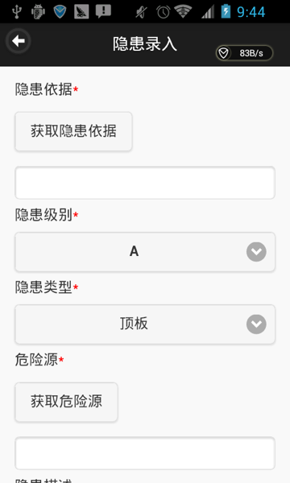
图2-1-2
 图2-1-3
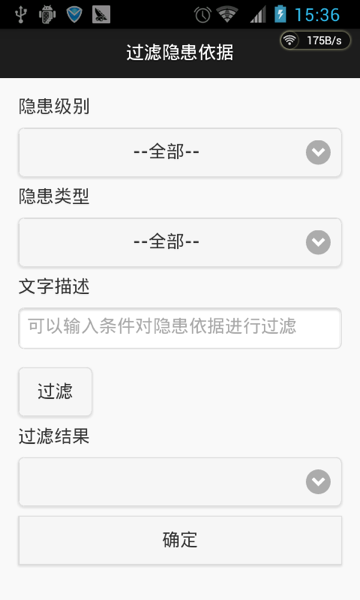
图2-1-3
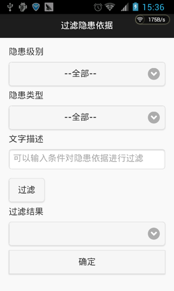
三违录入：三违录入时，需要录入项包括三违依据，三违性质，三违类型，三违专业，危险源，三违描述，三违人员，排查人员，排查地点，明细地点，排查时间，排查班次，检查方式等信息。三违依据是通过建立的三违标准基础库检索
。录入时带*号内容必须录入，不可为空（图2-2-1）。录入信息时，点“获取三违依据”，跳转至“过滤三违依据”页面（图2-2-2），根据三违性质和文字描述进行过滤三违依据，在过滤结果下拉框选择依据，确定后更新到三违录入页面。点“获取危险源”，跳转至“过滤危险源”页面（图2-2-3），根据等级和文字描述进行过滤危险源，在过滤结果下拉框中选择危险源，确定后更新到隐患录入页面。点“获取三违人员”，跳转至“过滤三违人员”页面（图2-2-4），根据部门和姓名进行过滤危险源，在过滤结果下拉框中选择三违人员，确定后更新到隐患录入页面。录入信息时，三违依据，三违人员，用简拼和汉字检索内容进行选择，三违地点，用汉字检索内容进行选择，信息全部填写正确以后，点击提交按钮，即完成本次三违录入。
图2-2-1
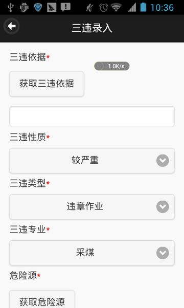
图2-2-2
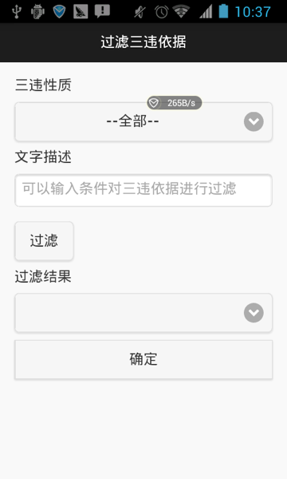
图2-2-3
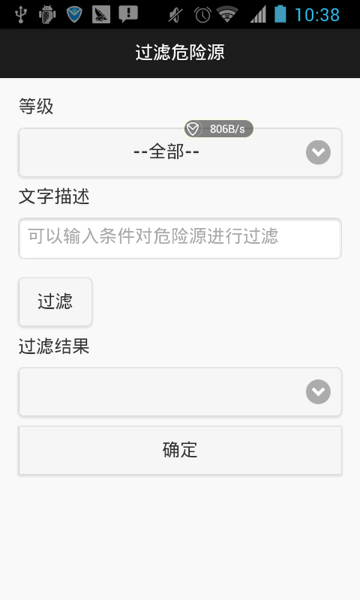
图2-2-4
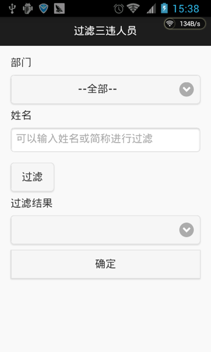
录入信息查询（最近20条）：根据选择查询目标、班次、等级、类型查询录入的隐患或三违（图2-3-1）。隐患查询结果页面，点击“自定义列...”，可设置责任单位、隐患依据、录入时间的显示和隐藏。三违查询结果页面，点击“自定义列...”，可设置三违人员、三违依据和录入时间的显示与隐藏。
图2-3-1
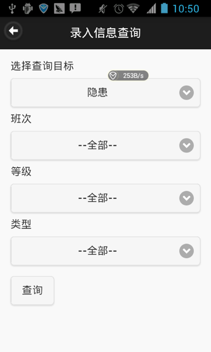
图2-3-2
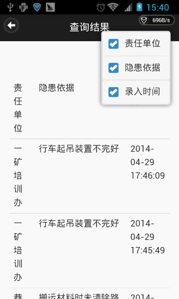
图2-3-3
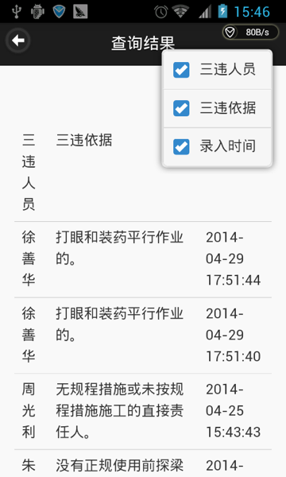
3 安全隐患。
概述：包括隐患、三违、入井记录。
操作：
隐患：根据10种隐患类型：顶板、通风、瓦斯、煤尘、机电、运输、放炮、火灾、水害、其他等查看隐患（图3-1-1）。点击“顶板”进入隐患列表（图3-1-2），下拉可以刷新列表，上拉可以加载更多的数据。点击一条记录，进入隐患详细信息界面，可以查看隐患详细信息（图3-1-3）。
图3-1-1
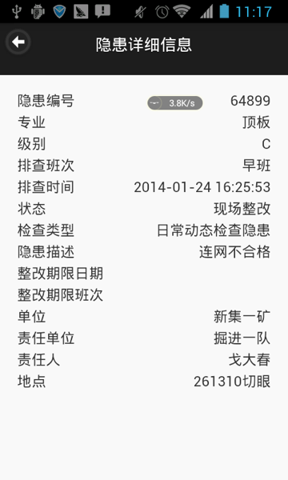
图3-1-2
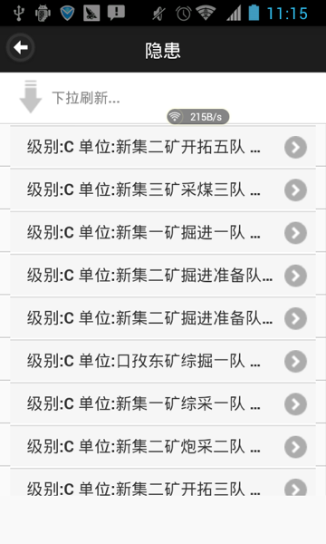
图3-1-3
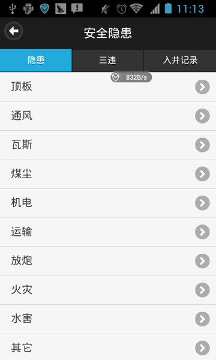
三违：根据3种三违类型：违章作业、违章指挥、违反劳动纪律查看三违（图3-2-1）。点击“违章作业”进入三违列表（图3-2-2），下拉可以刷新列表，上拉可以加载更多的数据。点击一条记录，进入三违详细信息界面，可以查看三违详细信息（图3-2-3）。
图3-2-1
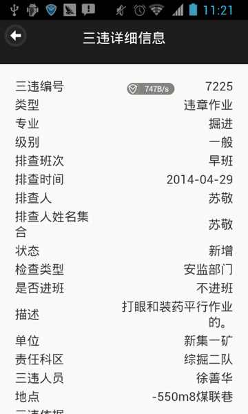
图3-2-2
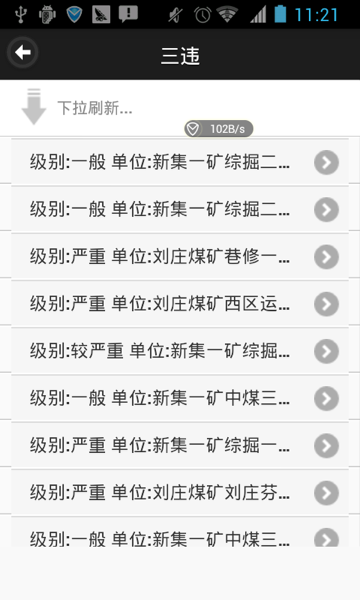
图3-2-3
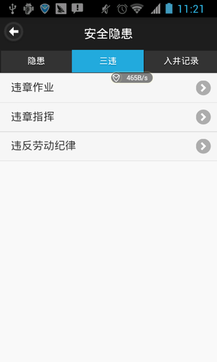
入井记录：根据2种入井类型：正常和带班，查看入井记录（图3-3-1）。点击“正常”进入入井列表，下拉可以刷新列表（图3-3-2），上拉可以加载更多的数据。点击一条记录，进入入井详细信息界面，可以查看入井详细信息（图3-3-3）。
图3-3-1
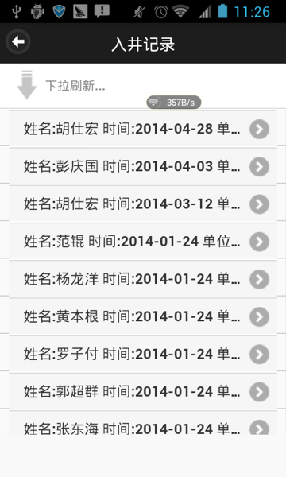
图3-3-2
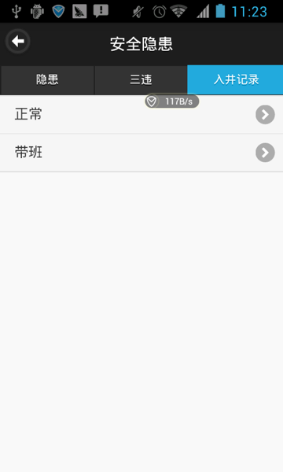
图3-3-3
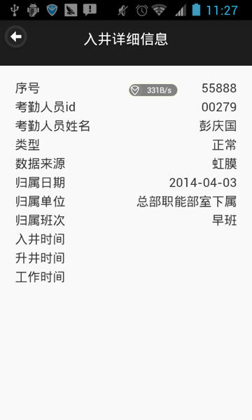
4 统计查询。
概述：包括带班计划表、反三违信息查询、各单位值班及带班领导统计、工伤信息、挂牌信息、各矿隐患查询、领导干部下井及下井带班情况、全公司月度三违挂牌汇总、全公司月度隐患汇总、入井信息查询、三违信息查询、隐患分类统计、隐患信息综合查询。
操作：
带班计划表。根据日期、班次和姓名，查询带班计划，下拉可以刷新列表，查询结果页面，上拉可以加载更多的数据。点击“自定义列...”，可设置班次、计划带班人员、调整带班人员的显示与隐藏（图4-1-1）。
图4-1-1
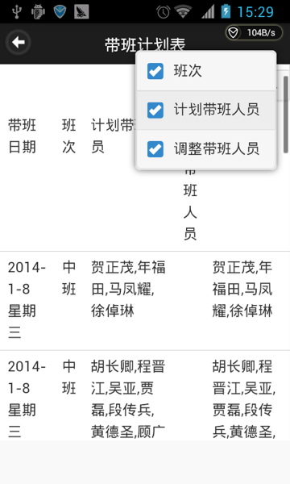
反三违信息查询。根据开始日期、结束日期和人员姓名，查询反三违信息，查询结果页面，下拉可以刷新列表，上拉可以加载更多的数据。点击“自定义列...”，可设置单位的显示与隐藏（图4-2-1）。
图4-2-1

各单位值班及带班领导统计。分别查看今天和明天值班值班带班领导统计。
工伤信息。根据开始日期、结束日期、部门、等级和姓名，查询工伤信息，查询结果页面，下拉可以刷新列表，上拉可以加载更多的数据。点击“自定义列...”，可设置部门的显示与隐藏（图4-3-1）。
图4-3-1
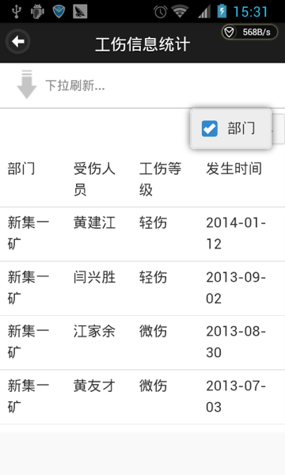
挂牌信息。查询所有挂牌记录，查询结果页面，下拉可以刷新列表，上拉可以加载更多的数据。点击“自定义列...”，可设置班次、挂牌类型的显示与隐藏（图4-4-1）。
图4-4-1
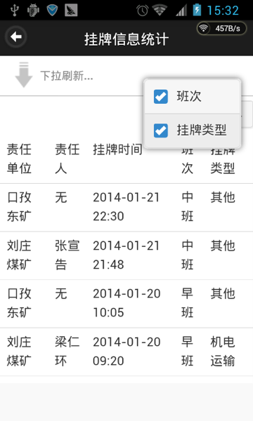
各矿隐患查询。查询各矿所有隐患，选择矿，设置开始日期和截止日期，进行查询（图4-5-1），查询结果页面，下拉可以刷新列表，上拉可以加载更多的数据。点击“自定义列...”，可设置已闭合、未闭合、逾期、A级、B级、C级的显示与隐藏（图4-5-2）。
图4-5-1
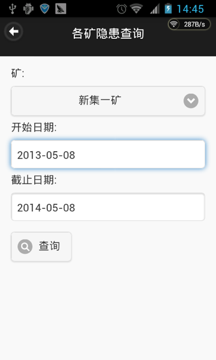
图4-5-2

领导干部下井及下井带班情况。查询领导干部下井及下井带班情况，设置开始日期、截止日期和姓名，进行查询，查询结果页面，下拉可以刷新列表，上拉可以加载更多的数据。点击“自定义列...”，可设置单位、规定带班、实际带班、排查隐患、排查三违的显示与隐藏（图4-6-1）。
图4-6-1
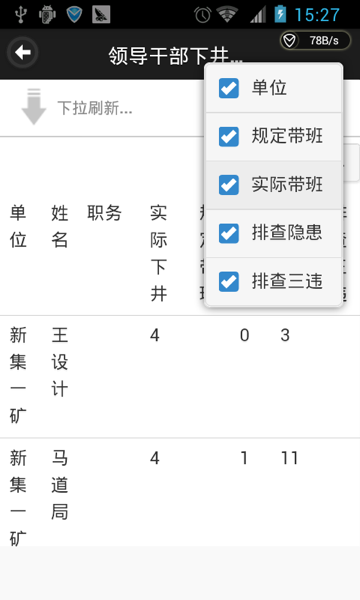
全公司月度三违挂牌汇总。查询全公司月度三违挂牌情况，设置类型和日期，进行查询，查询结果页面，下拉可以刷新列表，上拉可以加载更多的数据。
图4-7-1
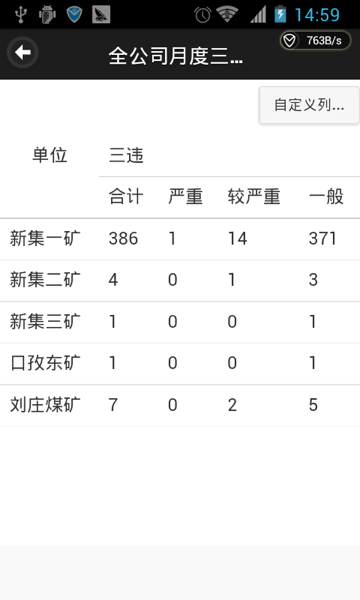
全公司月度隐患汇总。查询全公司月度隐患汇总，设置日期，进行查询。查询结果页面，。
图4-8-1
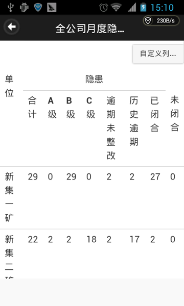
入井信息查询。查询入井信息，设置开始日期、结束日期和部门，进行查询，查询结果页面，下拉可以刷新列表，上拉可以加载更多的数据。点击“自定义列...”，设置部门的显示和隐藏（图4-9-1）。
图4-9-1
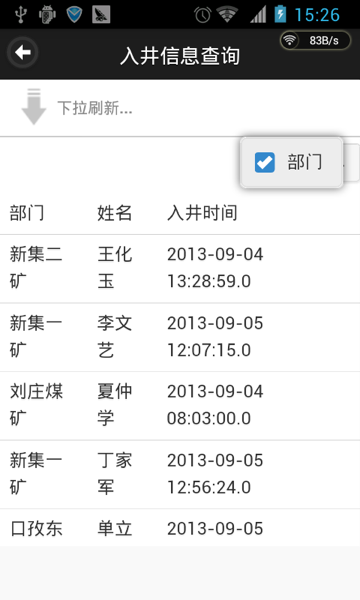
三违信息查询。查询三违信息，设置开始日期、结束日期和部门，进行查询，查询结果页面，下拉可以刷新列表，上拉可以加载更多的数据。点击“自定义列...”，设置责任单位和三违级别的显示和隐藏（图4-10-1）。
图4-10-1
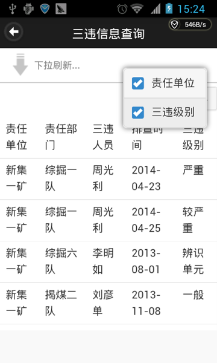
隐患分类统计。查询隐患分类统计，设置开始日期、结束日期和责任单位，进行查询，查询结果页面，下拉可以刷新列表，上拉可以加载更多的数据。点击“自定义列...”，设置单位、已闭合、未闭合、逾期、A级、B级、C级的显示和隐藏（图4-11-1）。
图4-11-1
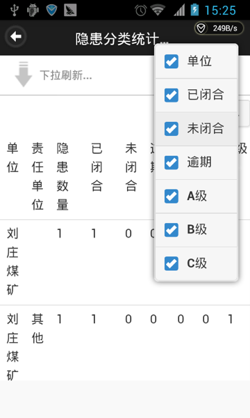
隐患信息综合查询。查询隐患分类统计，设置开始日期、结束日期和责任单位，进行查询，查询结果页面，下拉可以刷新列表，上拉可以加载更多的数据。点击“自定义列...”，设置班次、隐患类型、隐患状态的显示和隐藏（图4-12-1）。
图4-12-1
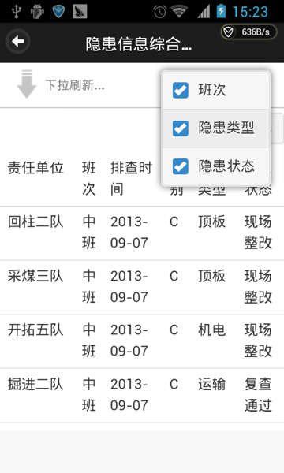
5 三违现场查询。
概述：包括三违现场查询。
操作：
三违现场查询：设置开始日期和结束日期（图5-1-1），进行三违现场查询（图5-1-2）。
图5-1-1
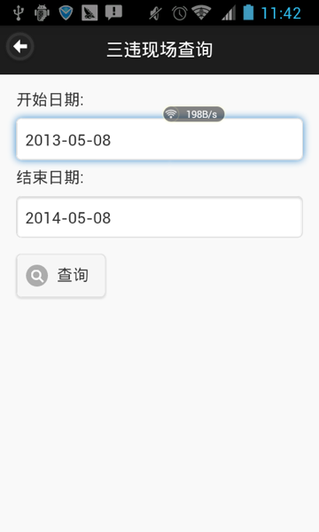
图5-1-2
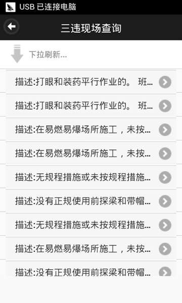
6 视频监控。
概述：包括视频监控。
操作：
视频监控：显示所有视频（图6-1-1）。
图6-1-1